Carbohydrates, Lipids, Proteins and Nucleic Acids Part 1
Callout
CARBOHYDRATES
They are biomolecules which can be categorized into simple and complex carbohydrates.
Their general chemical composition - C, H, O.
Name derived due to composition - CARBON © + HYDRATE (H2O).
General functions - energy source, structural support, cell-to-cell communication, a component of other biomolecules (like amino acids, lipids, nucleic acids).
Do you know how the simplest carbohydrates are synthesized in nature? What is this process called?
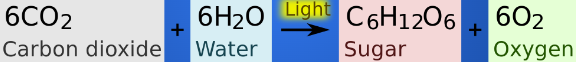
MONOSACCHARIDES
These are the simplest carbohydrates and chemically, they are comprised of single sugars.
General formula is (CH2O)n , where n= no. of carbon atoms.
Highly soluble due to many hydroxyl (-OH) groups >>>> hydrophilic molecules.
Callout
Nomenclature:
Triose- 3C Pentose- 5C Hexose- 6
STRUCTURAL FORMS OF MONOSACCHARIDES
(GLUCOSE):
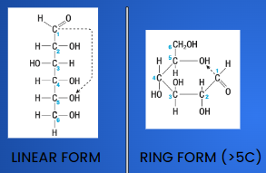
How is the ring formed???
The carbonyl group on C1 interacts with hydroxyl group on C6!
EXAMPLES OF MONOSACCHARIDES
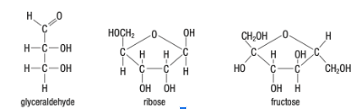
Callout
DISACCHARIDES
These are simple carbohydrates and chemically, they are comprised of 2 monosaccharides.
Highly soluble due to many hydroxyl (-OH) groups >>>> hydrophilic molecules.
They are formed by a dehydration reaction between 2 monosaccharides.
EXAMPLE OF A DEHYDRATION REACTION (FORMATION OF MALTOSE) :
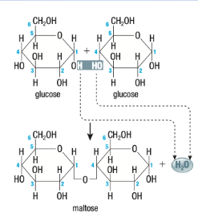
EXAMPLES OF DISACCHARIDES
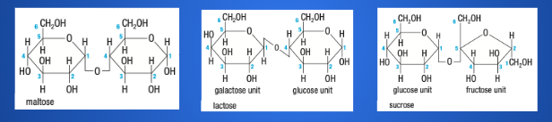
IMPORTANT CONCEPT #1
Isomers are molecules of the same formula but having a different arrangement of their atoms
Example: Glucose, fructose, and galactose are isomers of each other!
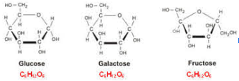
IMPORTANT CONCEPT #2
GLYCOSIDIC BOND
A Glycosidic bond is the type of linkage that occurs between sugar molecules. An aldehyde or a ketone group on one monosaccharide can react with a hydroxyl group on another monosaccharide, forming a glycosidic bond. It is represented as 1 4, 1 2, 1 3, or 1 6.
There are two types of glycosidic bonds - alpha and beta linkages (depending on whether the OH on the C1 is below OR above the glucose ring)
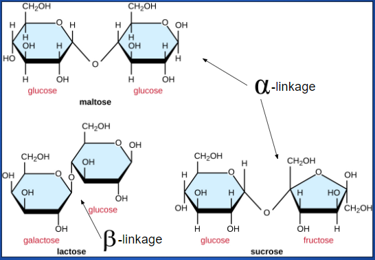
POLYSACCHARIDES
These are complex carbohydrates and chemically, they are comprised of many linked monosaccharides joined by glycosidic linkages.
Very hydrophilic due to high number of polar hydroxyl groups, but due to large size, they only attract water but does not dissolve>>>> reason why paper towels are so absorbent!
Main Functions: Energy storage (starch in plants, glycogen in animals); Structural support (cellulose as cell walls of plants, chitin as exoskeleton of insects)
EXAMPLES OF POLYSACCHARIDES
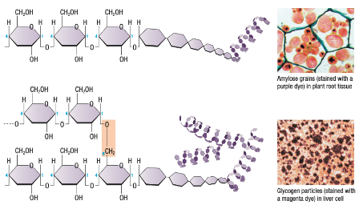EXAMPLES OF POLYSACCHARIDES
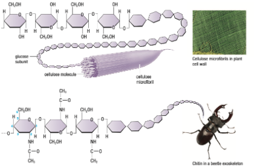
LIPIDS
They are smaller biomolecules, and not polymers of specific monomers >>>> NOT macromolecules.
Their general chemical composition - C, H, lesser O. Includes all non-polar biological molecules >>>> insoluble in water>>>> can form membranes!
General functions - energy source, hormones, some vitamins, membranes of cells and organelles.
5 main types- Fatty acids, Fats, Phospholipids, Steroids, Waxes.
FATTY ACIDS
These form the structural backbone of most lipids.
General composition- Hydrocarbon chain (>4C, mostly 14-22 C) + Carboxyl (-COOH) functional group >>>> acidic properties
As HC chain length increases s>>>> Insolublity increases >>>> hydrophobic molecules.
2 types- Saturated and Unsaturated fatty acids
SATURATED AND UNSATURATED FATTY ACIDS
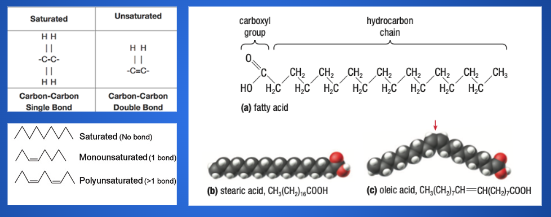General composition- Glycerol backbone + 1/2/3 Fatty acid chains (identical /non-identical)
Nomenclature
Monoglyceride Diglyceride Triglyceride
1 FA 2FA 3FA
2 types- Saturated (butter, lard obtained from animal sources)and Unsaturated Fats (olive oil, sunflower oil obtained from plants.)
As the length of FA chain increases >>>> solubility of triglyceride decreases.
DEHYDRATION SYNTHESIS OF TRIGLYCERIDES
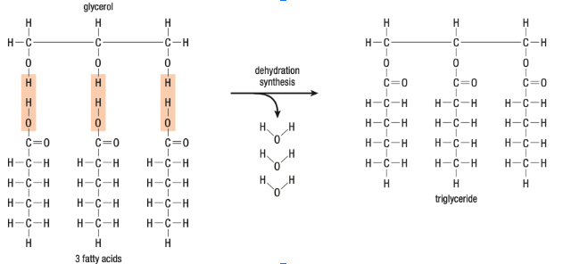
INTERESTING FACTS
If animal fat were solid, animals would not be able to move about >>>> flexibility is a characteristic imparted to them due to the fluid nature of fats present in them. Despite being mostly saturated, these fats remain liquid because of relatively high body temperature.
The lipid reserves in plant seeds and cold-water fish are mostly unsaturated fats >>>> liquids even at lower temperatures >>>> allow fish bodies to stay flexible at lower temperatures >>>> fish-oil is beneficial because diets rich in saturated fats can lead to heart disease.
Triglycerides yield more than twice as much energy as carbohydrates (per gram weight).
A layer of fatty tissue below the skin provides thermal insulation in mammals and birds.
The Inuit, from the Arctic, have a diet that is very high in animal proteins from fish, seal, whales etc.
a diet high in both fat (mostly monounsaturated and omega-3 fatty acids) and protein, but very low in carbohydrates >>>> healthier fat than the saturated animal fats in a typical North American diet (fries and chips)!
PHOSPHOLIPIDS
General composition- Glycerol backbone + 2 Fatty acid chains (identical /non-identical)+ Phosphate group >>>> similar to triglyceride structure!
Amphipathic molecules >>>> Primary component of Cell membranes in the form of a bilayer >>>> hydrophobic tails of both layers face inward and towards each other, hydrophylic heads face outward towards H2O.
Callout
A PHOSPHOLIPID AND ITS PRESENCE IN A MEMBRANE BILAYER
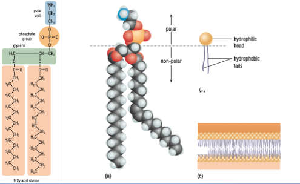
STEROIDS
General composition- 4 rings of carbon fused ;
Side groups attached to rings differ >>>> gives different properties.
Sterols >>>>steroids with a -OH group at one end >>>>
Non-polar ring structure + Polar hydroxyl group >>>> dual solubilities ~~~ phospholipids >>>> found in similar roles!
Examples- in animal cell membrane- cholesterol; in plant cell membrane- phytosterol.
SOME COMMON STEROIDS (HORMONES)
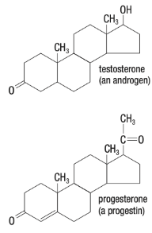
Callout
INTERESTING FACTS
Atherosclerosis
++ cholesterol >>>> ++ saturated fats,
Fat deposits (Plaques) on inner lining of vessels,
>>>> blood flow obstruction >>>> heart attack!
Anabolic steroids
Sex hormone supplements ( testosterone, estrogen, progesterone) taken by sportsmes >>>> to increase muscle mass >>>> increases BP >>>> health issues.
WAXES
General composition- Long Fatty acid chains + alcohol/ carbon rings
Hydrophobic, non-polar, and soft solids (over a wide range of temperatures) >>>> ideal for
flexible waterproof coatings on various plant and animal parts.
Examples- Cutin forms a water-resistant coating on the surfaces of some plants >>>> conserve water, barrier to infections; Birds >>>> a waxy material helps keep feathers dry; Bees >>>> beeswax to make honeycombs.
SUMMARY OF LIPIDS
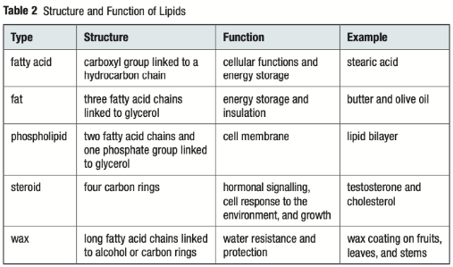
Proteins and Nucleic Acids
Protein – A large molecule that consists of many amino acid subunits that are joined together by peptide bonds folded into a specific three-dimensional shape
Lesson Description
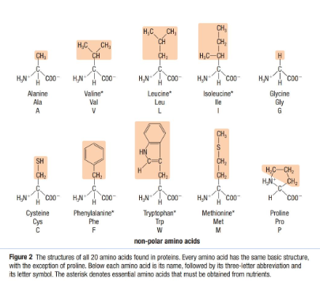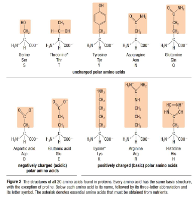.png)
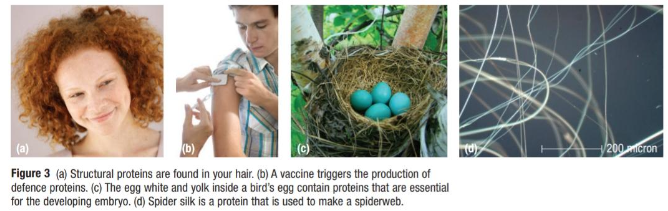
Callout
INTERESTING FACTS
Hormones in the cell are signal proteins.
Hemoglobin >>>> special protein in red blood cells >>>> delivers oxygen to muscle and other tissues and organs.
Egg whites >>>> contain storage proteins >>>> provide essential chemical building blocks for developing embryos.
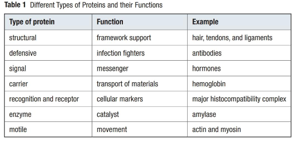
Amino Acid – A molecule that contains a carboxyl and an amino group; serves as the monomer subunit of proteins
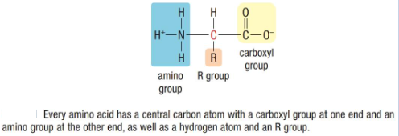
Peptide – A chain of amino acid subunits that are connected by peptide bonds
Peptide Bond – A covalent bond that links amino acids
Polypeptide – A peptide with more than 50 amino acids
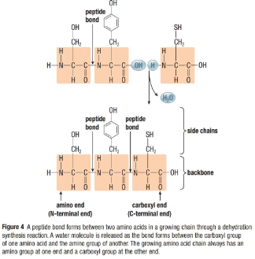
Callout
PROTEIN STRUCTURE
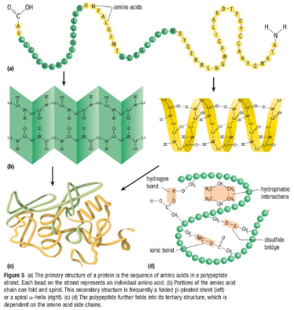
A single change in the primary structure of proteins >>>> alter or destroy the biological function of the protein
With 20 possible amino acids >>>> 400 different combinations possible by joining 2 amino acids >>>> 8000 combinations by joining 3 amino acids
Secondary structure of proteins >>>> result of hydrogen bonding between different parts of the same amino acid backbone
2 common secondary structures – beta pleated (β-pleated) sheet and alpha helix (α-helix)
The tertiary structure of protein – the overall 3-dimensional shape of a protein due to a range of bonding interactions among amino acid R groups
Denaturation – loss of both structure and function of a protein
Many proteins >>>> composed of 2 or more polypeptides that come together to form final functional proteins
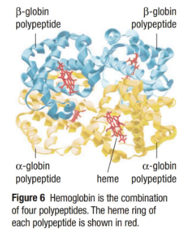
Callout
Nucleic Acid – A blueprint for proteins that are synthesized in cells; stores hereditary information
2 types of Nucleic Acids
DNA >>>> Deoxyribonucleic acid >>>> stores hereditary information >>>> responsible for inherited traits in all eukaryotes and prokaryotes and many viruses
RNA >>>> Ribonucleic acid >>>> hereditary molecule of some viruses >>>> some involved in protein synthesis in all cells
Nucleotide – The building block of nucleic acids >>>> consists of 5-carbon sugar, a nitrogenous base and 1-3 phosphate groups
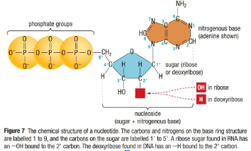
There are 2 general types of nitrogenous base :
Pyrimidines and Purines
Both have high nitrogen content
Pyrimidines >>>> single organic rings >>>> 3 bases are uracil (U), thymine (T) and cytosine (C)
Purines >>>> 2 ringed organic structures >>>> 2 bases are adenine (A) and guanine (G)
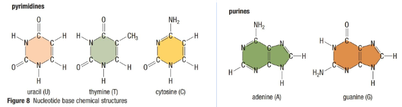
Callout
DNA and RNA: Nucleotide Polymers
Phosphodiester Bond >>>> Link that is formed between nucleotides by a phosphate bridge
Arrangement of alternating sugar and phosphate groups >>>> forms the backbone of a nucleic acid chain
DNA Chain >>>> nucleotide >>>> deoxyribose, a phosphate group, one of the four bases A, T, G or C
RNA Chain >>>> nucleotide >>>> ribose, a phosphate group, one of the four bases A, U, G or C

INTERESTING FACTS
Human body contains around 100000 different proteins made by different combinations of 20 amino acids.
Protein provides about 10 to 35 percent of calories needed everyday.
Quinoa, a grain-like crop contains all nine essential amino acids >>>> thereby, good source of complete protein.